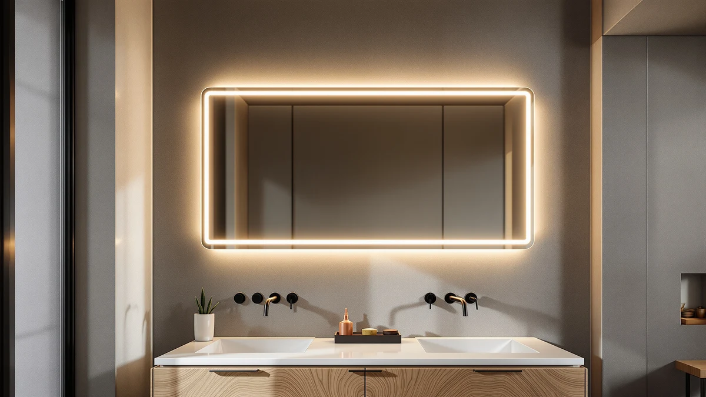

How to Clean Large Bathroom Mirrors: Complete Guide (2026)
Prices and picks verified as of September 2026. Independent, reader-supported reviews.


Things to Know Before You Buy
- Ammonia-based cleaners can damage antique or gold-leaf frames over time, so check your frame material before you spray anything close to it.
- Paper towels shed lint across a large mirror. A microfiber cloth picks up moisture and dust without leaving fuzz behind.
- Hard water spots need a mild acid, like white vinegar, to break down the mineral deposits that plain soap and water leave behind.
- Bathroom humidity redeposits moisture on glass within minutes, so ventilate the room or run the exhaust fan before you start.
- Wiping in straight, overlapping lines rather than circles makes it easier to spot and correct streaks on a mirror that spans several feet.
Knowing how to clean large bathroom mirrors properly saves you from streaks, water spots, and the film of toothpaste splatter and hairspray that a small hand towel never fully clears.
A mirror over four feet wide behaves differently than a small vanity mirror. Steam settles across more surface area, cleaning solution evaporates before you reach the far corner, and a single dry cloth can't buff the whole thing before it streaks. The five steps below use a solution, cloth, and technique that hold up on oversized glass, whether it's one wall-to-wall panel or a framed piece over a double sink.
What You'll Need
- Supplies: white vinegar and distilled water (or an ammonia-free glass cleaner), two or more microfiber cloths, rubbing alcohol for stubborn residue
- Tools: a spray bottle and a squeegee for mirrors wider than 24 inches
Step 1: Dust and Clear the Mirror First
Take down any decor, shelving items, or toiletries sitting in front of the mirror, and wipe the frame with a dry cloth so loose dust doesn't fall onto the glass while you work. On a large mirror, dust settles unevenly, with more collecting near the top where it drifts down from the ceiling, so give that upper section extra attention.
Run a dry microfiber cloth over the entire surface in one pass before you add any liquid. Skipping this step means you're pushing dust and hair into your cleaning solution, and on a mirror this size, that turns a quick wipe-down into a smearing mess.
Step 2: Mix a Streak-Free Cleaning Solution
Fill a spray bottle with equal parts white vinegar and distilled water. Tap water contains minerals that leave their own spots once it dries, and on a large mirror, any residue is easy to spot from across the room. If you'd rather skip mixing your own solution, an ammonia-free glass cleaner works just as well.
Skip ammonia-based cleaners on mirrors with wood, gold-leaf, or antique-style frames. Ammonia can strip the finish or discolor the trim where cleaner drips down from the glass, and on a mirror this size, drips happen.
Step 3: Work the Mirror in Sections, Top to Bottom
Spray the top third of the mirror and wipe it with a clean microfiber cloth before moving down. On a mirror wider than two or three feet, spraying the entire surface at once means the solution dries on one side before you reach it, and dried cleaner is what causes the hazy streaks you're trying to avoid.
Work in straight, overlapping lines rather than circles. Circular wiping spreads residue around instead of lifting it off, while straight passes let you see exactly which lines still need another wipe. Move top to bottom so any drips land on glass you haven't cleaned yet, not on a section you just finished.
Step 4: Dry and Buff With a Second Cloth
Grab a second, completely dry microfiber cloth and buff the glass right behind your cleaning pass. Letting a large mirror air-dry gives water enough time to leave mineral spots as it evaporates, especially in a bathroom where the air is already humid from a recent shower.
Fold the cloth so you're always buffing with a clean section, and check the mirror at an angle under the bathroom light. Streaks show up more under angled light than head-on, so tilt your head or step to the side before you decide a section is done.
Step 5: Spot-Treat Edges and Hard Water Marks
Check the edges near the sink and any area within splash range of the shower. Hard water marks and toothpaste flecks tend to cluster there, and a general spray-down often doesn't break them up on the first pass. Dab a cloth in straight rubbing alcohol for hairspray buildup, or press a vinegar-soaked cloth against a hard water spot for about a minute before wiping.
Finish with a final dry buff across the whole mirror once the spot-treated areas are clean. Large mirrors show every inconsistency, so this last pass catches anywhere the light reveals a streak or a missed spot.
Common Mistakes to Avoid
Spraying cleaner directly onto the mirror is the most common mistake on a large piece of glass. The solution runs down before you can wipe it, pooling at the bottom edge or seeping behind the frame, where it can loosen adhesive or warp wood trim over time. Spray the cloth instead, and let the cloth carry the moisture to the glass.
Using paper towels is another one. They feel convenient, but the fibers shed lint across a surface this large, and you end up chasing bits of paper around the glass longer than the actual cleaning took. A microfiber cloth costs a few dollars and lasts through hundreds of washes.
Reaching for an ammonia-based glass cleaner on a framed mirror without checking the frame material causes damage you can't reverse. Wood, gold leaf, and antique finishes react to ammonia in ways plain glass never shows, so a quick label check saves you a refinishing job later.
Cleaning a steamy mirror right after a hot shower also wastes your effort. Condensation keeps forming as the room cools, so the mirror fogs again within minutes no matter how well you just wiped it. Run the exhaust fan for ten minutes first, and the glass stays clear once you're done.
Our Top Picks
If your large mirror has reached the point where cleaning alone won't fix scratches, permanent clouding, or a frame that's coming apart, these are three replacement options worth a look.

Editor's Pick
TRAHOME Full Length Floor Mirror
A budget-friendly full-length floor mirror worth considering if your current bathroom mirror has developed permanent clouding.
$39.98
Check Price on Amazon
Best Value
LOAAO 40"X30" Gold Bathroom Mirror
A wide gold-framed mirror sized for a double vanity, useful if your current mirror's frame is what's failing rather than the glass itself.
$149.99
Check Price on Amazon
Premium Choice
Koonmi Black Mirrors for Wall
A black-framed wall mirror that hides minor edge chips and water damage better than a frameless design, at a mid-range price.
$69.99
Check Price on AmazonFrequently Asked Questions
How often should you clean a large bathroom mirror?
Wipe a bathroom mirror down once or twice a week if you shower nearby, since splash and steam build up residue faster than in other rooms. A quick squeegee pass after each shower cuts down on how often you need a full cleaning.
What is the best homemade cleaner for a bathroom mirror?
A mix of equal parts white vinegar and distilled water, applied with a microfiber cloth, removes soap scum and water spots without the ammonia smell or residue some commercial sprays leave behind.
Can you use Windex on a large bathroom mirror?
Windex and similar ammonia-based cleaners work fine on unframed glass, but avoid spraying them near wood, gold leaf, or antique frames, since ammonia can strip or discolor those finishes over time.
Why does my bathroom mirror keep getting streaky?
Streaks usually come from using too much cleaner, wiping in circles instead of straight lines, or letting the solution air-dry instead of buffing it off right away with a dry cloth.
How do you remove hard water spots from a bathroom mirror?
Press a cloth soaked in white vinegar against the spot for about a minute to loosen the mineral deposit, then wipe and buff dry. For spots that don't budge, a gentle paste of baking soda and water can help without scratching the glass.
Verdict
Cleaning large bathroom mirrors comes down to the right solution, a lint-free cloth, and working in sections instead of attacking the whole surface at once. A vinegar-and-water mix cuts through soap scum and hard water spots without the residue some commercial glass cleaners leave on oversized glass, and buffing dry right after you wipe keeps steam from forming new water marks before you've finished. Follow the five steps above consistently, and a mirror that spans an entire vanity wall stays as clear as a small one, without the extra time its size might suggest.
If your current mirror has reached the point where cleaning can't fix clouding, chips, or a frame coming apart at the corners, the TRAHOME full-length floor mirror above is a straightforward, affordable option to replace it with rather than keep patching up a mirror past its useful life.